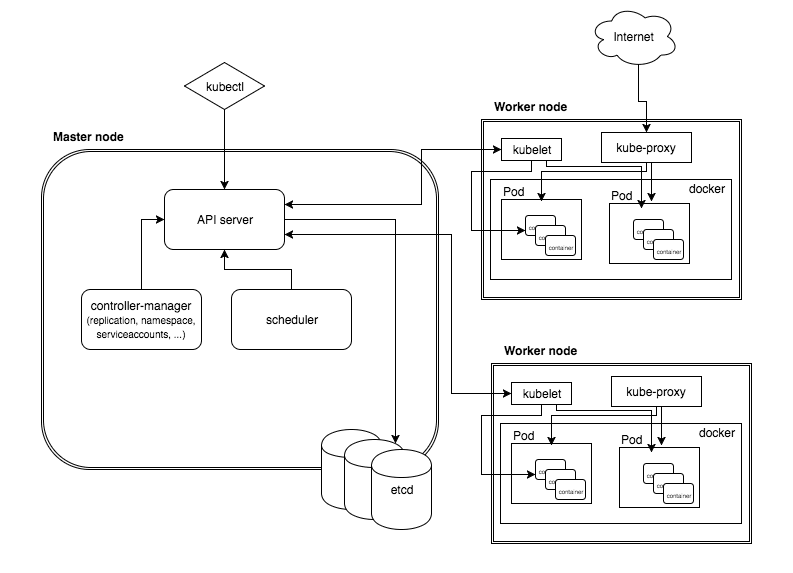

K8S基本概念
k8s概述和特性
k8s是谷歌在2014年开源的容器化集群管理系统
使用k8s进行容器化应用部署
使用k8s有利于应用的拓展
k8s让部署容器化应用更加简洁和高效
k8s功能
自动装箱
基于容器对应用环境的资源配置要求自动部署容器
自我修复（自愈能力）
当容器失败时，会对容器进行重启
当所部署的Node节点有问题的时候，会对容器进行重新部署和重新调度
当容器未通过监控检查时，会关闭此容器知道容器正常运行时，才会对外提供服务
水平扩展
通过简单的命令、用户ui界面或基于cpu等资源等利用情况，对应用容器进行规模扩大或者规模裁剪
服务发现
用户不需要使用额外的服务发现机制，就能基于Kubernetes自身能力实现服务发现和负载均衡
滚动更新
可以根据应用的变化，对应用容器运行的应用，进行一次性或者批量式的更新
版本回退
可以根据应用部署情况，对容器运行的应用，进行历史版本及时回退
存储编排
自动实现存储系统挂载及应用，特别对有状态应用实现数据持久化非常重要。存储系统可以来自于本地目录、网络存储、公共云存储服务
批处理
提供一次性任务，定时任务，满足批量数据处理和分析的场景
k8s架构组件

master组件
含义：主控节点，负责调度的节点，包含以下几个组件
api server
集群统一入口，以restful方式操作，交给etcd进行存储
schedule
节点的调度，选择node节点部署应用
controller manager
处理集群中常规后台任务，一个资源对应一个控制器
etcd
存储系统，用于保存集群里面的相关数据
node组件
含义：工作节点，实际执行任务的节点，包含以下几个组件
kubelet
master派到node节点的代表，管理本机容器
kube-proxy
提供网络代理，实现负载均衡等操作
k8s核心概念
Pod
最小部署单元
一组容器的集合
一个pod的容器的共享网络的
生命周期是短暂的
Controller
确保预期的pod副本数量
无状态应用部署，就是没有特殊状态的服务,各个请求对于服务器来说统一无差别处理,请求自身携带了所有服务端所需要的所有参数(服务端自身不存储跟请求相关的任何数据,不包括数据库存储信息
有状态应用部署，可以说是 需要数据存储功能的服务、或者指多线程类型的服务，队列等。（mysql数据库、kafka、zookeeper等）
确保所有的node运行同一个pod
一次性任务和定时任务
Service
定义一组pod访问的规则